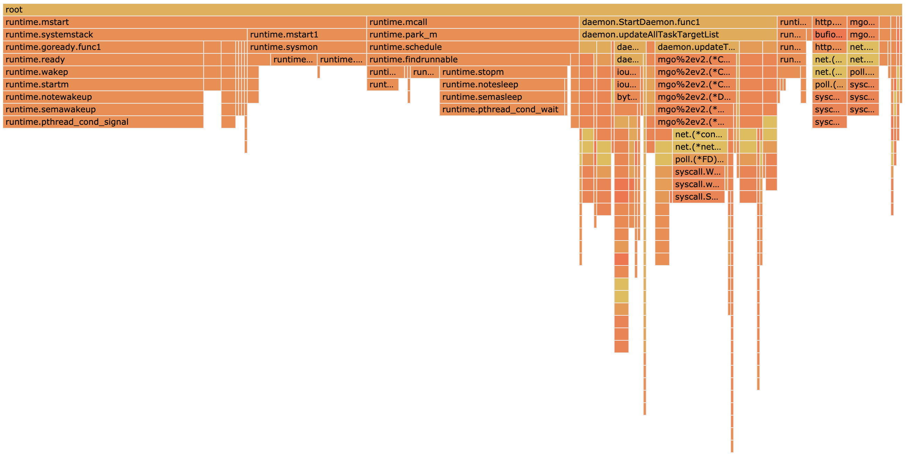

今天研究了一下Golang的pprof这个工具，它能分析程序性能问题。网上的教程已经很多了，我分享一个坑和最基本的操作步骤。
要点：
- Goland可能无法正常搭配pprof使用
- go 1.10的pprof已经自带火焰图，不需要使用go-torch了
Goland的坑
我写Golang的IDE是Goland，如果是使用Goland的“debug”模式运行程序的话，pprof就无法正常收集到样本，profile文件总是空的，收集内存的heap文件也有异常。我的解决方案是
|
|
这样就可以了。
关于负载
如果想让pprof采集到一些有用的数据，要让自己的程序有一定负载的。比如说我的程序有一个周期性的任务，本来的频率是10秒/次，为了增加负载，我直接
|
|
用这样的方式死循环运行这个函数，增加负载。
运行步骤
运行程序后，首先采集样本
|
|
默认的时间是30秒。
运行结束后，会直接进入命令行中的交互模式。我在交互模式中用过top10, list [函数名]两个功能，可以方便地查看具体是哪一行代码耗时较多。
同时，程序会给出样本文件的存放路径，类似/Users/xxx/pprof/pprof.main.samples.cpu.007.pb.gz
如果想运行火焰图的话，需要先安装google/pprof
|
|
从go 1.10开始，pprof就自带火焰图功能，不需要使用go-torch这个项目了。
然后运行
|
|
在浏览器中，点“View”，“Flame Graph”即可看到火焰图。
关于火焰图
性能分析文件，如果以火焰图的形式展现出来，会非常直观。

火焰图的横轴表示运行时间，可以观察程序不同部分的占比。用鼠标点击的话还可以展开。